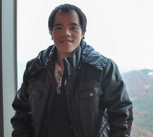

|  |
|
tohoanglinh AT gmail DOT com
I earned Ph.D. and M.Eng. degree both under the supervision of Prof. Won-Joo HWANG at Computer Network Lab, now is Wireless Networks Lab, Inje University, respectively, in 2013 and 2016. Before that, I received B.Eng. degree, majoring in Control and Automation Engineering, at Hanoi University of Science and Technology, in 2009. During August, 2013, I had a visiting scholar to ICUBE lab with supports from Prof. Fabrice Theoleyre, Strasbourg University, France.
2013.08–2013.09: Visiting Scholar, ICUBE Lab, Strasbourg University, France.
2011.09–2016.08: Research Student, CNL Lab, Inje University, Korea.
2010.03–2011.08: Circuit Engineer, R&D Dept, LG Electronics, Vietnam.
2013–2016: Ph.D., Network, Dept of Information and Communication Systems, Inje University.
2011–2013: M.Eng., Network, Dept of Information and Communication Systems, Inje University.
2004–2009: B.Eng., Control and Automation, Dept of Industrial Automation, Hanoi University of Science and Technology.
Check my latest Google Scholar Citations out!
bold & underscore: first author.
underscore: corresponding author.
SCIE journals.
K.H.Kim, H.L.To, W.J.Hwang and J.T.Lee, “Infinite queue management via cascade control for industrial routers in smart grid ip networks”, Scientific Programming, 2016.
A.Radwan, H.L.To and W.J.Hwang, “Optimal control for bufferbloat queue management using indirect method with parametric optimization”, Scientific Programming, 2016.
Q.V.Pham, H.L.To and W.J.Hwang, “A multi-timescale cross-layer approach for wireless ad hoc networks”, Computer Networks, vol.91, pp.471-482, 2015.
H.L.To, T.M.Thi and W.J.Hwang, “Cascade probability control to mitigate bufferbloat under multiple real-world tcp stacks”, Mathematical Problems in Engineering, 2015.
H.L.To, S.H.Lee and W.J.Hwang, “A burst loss probability model with impatient customer feature for optical burst switching networks”, International Journal of Communication Systems, vol.28, no.11, pp.1729-1740, 2015.
Domestic journals.
T.H.Linh, G.O.Yoon, J.H.Nam, G.Solongo and W.J.Hwang, “Feedback burst loss ratio control for link performance improvement in optical burst switching networks”, Journal of Korea Multimedia Society, vol.16, no.9, pp.1067-1076, 2013.
2014.10, “Best Student Paper”, 3rd Japan-Korea Joint Workshop on Complex Communication Sciences (JKCCS’14), Busan, Korea.
H.L.To and W.J.Hwang, “A Bufferbloat Management Scheme using Two-Loop Control under Mixed Bursty Traffic”
{kind=link}